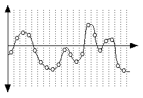
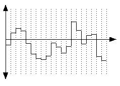

Das Sound-API macht eine sehr grundlegende Unterscheidung zwischen
gesampeltem Sound und Midi-Sound. Beim Sampling, das
wir in diesem Abschnitt behandeln wollen, wird ein Audio-Signal in
viele kleine Stücke zerlegt, deren Amplitude in sehr kurzen Abständen
mit Hilfe eines Analog-Digital-Konverters gemessen wird:

Abbildung 51.1: Samplen eines Audio-Signals
Die Frequenz, mit der die Abtastung geschieht, bezeichnet man als
Sampling Rate und sie sollte mindestens doppelt so hoch sein
wie die größte aufzuzeichnende Frequenz. Bei Audio-CDs
beträgt sie 44100 Hz und die Auflösung des A/D-Konverters
beträgt 16 Bit. Speichert man die so entstehenden Amplitudenwerte
fortlaufend ab, so kann man bei Kenntnis der Sampling-Rate daraus
später das Originalsignal näherungsweise rekonstruieren.
Sind Sampling-Rate und Auflösung hoch genug, kann das menschliche
Ohr keinen Unterschied zwischen gesampeltem und Originalsignal feststellen:

Abbildung 51.2: Ein gesampeltes Audio-Signal
51.2.2 Das Sampling-API
Das Sound-API macht keine Annahmen über vorhandene Hardware oder
angeschlossene Geräte. Stattdessen stellt es Methoden zur Verfügung,
mit denen die vorhandene Hardware zur Laufzeit ermittelt und Objekte
zum Zugriff darauf beschafft werden können. Im Falle von gesampeltem
Sound dient dazu die Klasse AudioSystem
aus dem Paket javax.sound.sampled.
Sie besitzt eine Reihe von statischen Methoden, mit denen die grundlegenden
Hilfsmittel für den Umgang mit gesampeltem Sound beschafft werden
können:
- Die Klasse AudioFormat
beschreibt das Format von gesampeltem Sound. Sie enthält unter
anderem Informationen über das Kodierungsverfahren, die Anzahl
der Kanäle, die Sampling Rate oder die Auflösung der einzelnen
Samples.
- Die Klasse AudioFileFormat
beschreibt das Format von Dateien, die gesampelten Sound enthalten.
Im Wesentlichen wird dazu ein eingebettetes AudioFormat-Objekt
verwendet, das mit einigen Zusatzinformationen versehen ist. Die wichtigsten
Dateiformate, die seit dem JDK 1.3 standardmäßig unterstützt
werden, sind wav, aiff
und au.
- Eine weitere wichtige Abstraktion ist die der Line.
Sie repräsentiert die verschiedenen, miteinander verbundenen
Elemente der Audio-Pipeline, mit denen die Sound-Daten erzeugt, transportiert
oder modifiziert werden. Die abstrakten Eigenschaften einer Line
sind, dass sie entweder geöffnet oder geschlossen ist und dass
sie eine Reihe von Control-Objekten
haben kann, um etwa die Lautstärke, das Stereo-Panorama oder
den Hall zu verändern. Zudem sendet eine Line
bei wichtigen Statusänderungen Events an registrierte Listener.
- Wichtige Subinterfaces von Line
sind Port
und Mixer.
Ein Port
ist ein Endpunkt der Audio-Pipeline, also etwa ein Mikrofon
oder CD-Laufwerk auf der Eingabeseite oder ein Kopfhörer- oder
Verstärkerausgang auf der Ausgabeseite. Ein Mixer
ist ein Audio-Element mit mehreren Ein-/Ausgabeleitungen. Er dient
typischerweise dazu, verschiedene Eingangssignale getrennt aufzubereiten
und zu einem Summensignal zusammenzumischen. Ein Mixer
kann auch Veränderungen an den Eingangssignalen vornehmen, etwa
einen Halleffekt hinzufügen oder mit Hilfe eines Equalizers den
Klang verändern.
- Mit DataLine
kommt das dritte Subinterface von Line
ins Spiel. Eine DataLine
ist das Vaterinterface für alle Lines, die explizit mit Datenströmen
umgehen. Eine SourceDataLine
versorgt einen Mixer
mit Eingabedaten und eine TargetDataLine
empfängt Daten von ihm. Ein Clip
ist eine spezielle Datenquelle, die vor der Weitergabe alle Daten
in einem Stück liest und fortan im Hauptspeicher hält. Ein
Clip
kann dadurch wahlfrei auf die Daten zugreifen und beispielsweise nur
einen Teil des Signals wiedergeben oder Ausschnitte beliebig oft wiederholen.
Allerdings kommt er nur für relativ kleine Datenmengen in Betracht.
Zugriff auf Audio-Dateien
Die Klasse AudioSystem
stellt einige Methoden zum Zugriff auf Dateien mit gesampeltem Sound
zur Verfügung:
public static AudioFileFormat getAudioFileFormat(File file)
throws UnsupportedAudioFileException, IOException
public static AudioFileFormat getAudioFileFormat(InputStream stream)
throws UnsupportedAudioFileException, IOException
public static AudioFileFormat getAudioFileFormat(URL url)
throws UnsupportedAudioFileException, IOException
public static AudioInputStream getAudioInputStream(File file)
throws UnsupportedAudioFileException, IOException
public static AudioInputStream getAudioInputStream(InputStream stream)
throws UnsupportedAudioFileException, IOException
public static AudioInputStream getAudioInputStream(URL url)
throws UnsupportedAudioFileException, IOException
public static boolean isConversionSupported(
AudioFormat targetFormat,
AudioFormat sourceFormat
)
public static AudioInputStream getAudioInputStream(
AudioFormat targetFormat,
AudioInputStream sourceStream
)
|
javax.sound.sampled.AudioSystem |
Mit getAudioFileFormat
kann das AudioFileFormat
einer Sound-Datei ermittelt werden. Die Eingabedatei kann entweder
als File,
InputStream
oder URL
übergeben werden. Mit getAudioInputStream
kann ein AudioInputStream
beschafft werden, mit dem der Inhalt der Sound-Datei gelesen werden
kann. Auch hier darf der Parameter wahlweise vom Typ File,
InputStream
oder URL
sein.
Die Klasse AudioSystem
unterstützt sogar Konvertierungen zwischen verschiedenen Formaten.
Ob eine bestimmte Konvertierung verfügbar ist, kann mit isConversionSupported
abgefragt werden. Wird getAudioInputStream
mit einem Zielformat und einem anderen AudioInputStream
als Parameter aufgerufen, führt die Methode die Konvertierung
durch und liefert einen AudioInputStream,
der das gewünschte Zielformat hat.
Audio-Geräte beschaffen
Die Klasse AudioSystem
stellt auch Methoden zum Zugriff auf Audio-Geräte zur Verfügung:
public static Mixer.Info[] getMixerInfo()
public static Mixer getMixer(Mixer.Info info)
public static Line getLine(Line.Info info)
throws LineUnavailableException
|
javax.sound.sampled.AudioSystem |
Um herauszufinden, welche Mixer
verfügbar sind, muss zunächst getMixerInfo
aufgerufen werden. Der Rückgabewert ist ein Array mit Mixer.Info-Objekten,
das je vorhandenem Mixer
ein Element enthält. Durch Übergabe eines Mixer.Info-Objekts
an getMixer
kann der zugehörige Mixer
beschafft werden. Man kann allerdings auch ohne explizite Verwendung
eines Mixers gesampelten Sound ausgeben, wenn mit getLine
direkt ein geeignetes Audio-Gerät beschafft wird. Dazu muss ein
Line.Info-Objekt
übergeben werden, das dessen Eigenschaften beschreibt. Wir werden
in Listing 51.1 zeigen,
wie das Line.Info-Objekt
konstruiert werden muss, um einen Clip
zu erzeugen.
Die Steuerelemente eines Audio-Geräts
Wir hatten eingangs erwähnt, dass eine Line
eine Reihe von Steuerlementen zur Verfügung stellt, mit denen
Parameter wie Lautstärke, Stereo-Panorama oder Hall eingestellt
werden können. Auf diese kann mit folgenden Methoden zugegriffen
werden:
public Control[] getControls()
public boolean isControlSupported(Control.Type control)
public Control getControl(Control.Type control)
|
javax.sound.sampled.Line |
getControls
liefert ein Array aller verfügbaren Steuerelemente, die durch
Instanzen der Klasse Control
repräsentiert werden. Mit isControlSupported
kann durch Übergabe eines Control.Type-Objekts
festgestellt werden, ob ein bestimmter Typ vorhanden ist. Mit getControl
kann dieser schließlich beschafft werden.
Control
ist die Basisklasse einer ganzen Gruppe von Kontrollelementen, die
sich durch den Datentyp des zu verändernden Parameters unterscheiden.
Es gibt die Unterklassen BooleanControl,
EnumControl,
FloatControl
und CompoundControl.
Ein FloatControl
beispielsweise dient zur Veränderung eines Fließkommawerts
(wie etwa der Lautstärke), während ein BooleanControl
einen An-/Aus-Wert verändern kann (beispielsweise die Stummschaltung
eines Elements). Die wichtigsten Methoden der Klasse FloatControl
sind:
Mit getMinimum
und getMaximum
können der kleinste und der größte einstellbare Wert
abgefragt werden, mit getValue
der aktuelle. Mit setValue
kann der Wert des Controls verändert werden.
Die Type-Klassen der einzelnen
Steuerelemente besitzen jeweils eine Reihe von vordefinierten Konstanten,
die an getControl
übergeben werden können. Für FloatControl.TYPE
sind das beispielsweise MASTER_GAIN
zur Einstellung der Lautstärke oder PAN
zur Veränderung des Stereo-Panoramas.
Ein Steuerelement des Typs MASTER_GAIN
bestimmt die Gesamtverstärkung, die das Audio-Element dem Ursprungssignal
hinzufügt. Ihr Wert wird in Dezibel
(dB) angegeben, wobei positive Werte
eine Verstärkung und negative eine Abschwächung des Eingangssignals
anzeigen. Das Dezibel ist eine logarithmische Maßeinheit, die
den Verstärkungsfaktor durch die Formel 10dB/20 ausdrückt.
20 dB entsprechen also einer 10-fachen Verstärkung, -40 dB einer
100-fachen Abschwächung. 0 dB bedeutet, dass die Stärke
des Ausgangs- im Verhältnis zum Eingangssignal unverändert
bleibt.
Ein Steuerelement des Typs PAN
bestimmt die Lage des Audio-Signals im Stereo-Panorama. Es kann Werte
von -1.0 (ganz links) bis +1.0 (ganz rechts) annehmen. Ein Wert von
0 legt das Signal in die Mitte.
Der Clip
Ein Clip
ist eine besondere Form einer DataLine,
der alle Audiodaten komplett im Hauptspeicher hält. Wie jede
Line
muss er vor der Verwendung durch Aufruf von open
geöffnet werden und nach Gebrauch mit close
geschlossen werden. Zum Abspielen stellt er folgende Methoden zur
Verfügung:
Ein Aufruf von start
startet das Abspielen des Clips, mit stop
wird er angehalten. Mit isRunning
kann überprüft werden, ob die Wiedergabe noch läuft
oder bereits beendet wurde.
51.2.3 Abspielen einer Sample-Datei
Nach den Erklärungen der vorangegangenen Abschnitte wollen wir
nun das Beispielprogramm zum Abspielen einer Sample-Datei vorstellen:
001 /* Listing5101.java */
002
003 import java.io.*;
004 import javax.sound.sampled.*;
005
006 public class Listing5101
007 {
008 private static void playSampleFile(String name, float pan, float gain)
009 throws Exception
010 {
011 //AudioInputStream öffnen
012 AudioInputStream ais = AudioSystem.getAudioInputStream(
013 new File(name)
014 );
015 AudioFormat format = ais.getFormat();
016 //ALAW/ULAW samples in PCM konvertieren
017 if ((format.getEncoding() == AudioFormat.Encoding.ULAW) ||
018 (format.getEncoding() == AudioFormat.Encoding.ALAW))
019 {
020 AudioFormat tmp = new AudioFormat(
021 AudioFormat.Encoding.PCM_SIGNED,
022 format.getSampleRate(),
023 format.getSampleSizeInBits() * 2,
024 format.getChannels(),
025 format.getFrameSize() * 2,
026 format.getFrameRate(),
027 true
028 );
029 ais = AudioSystem.getAudioInputStream(tmp, ais);
030 format = tmp;
031 }
032 //Clip erzeugen und öffnen
033 DataLine.Info info = new DataLine.Info(
034 Clip.class,
035 format,
036 ((int) ais.getFrameLength() * format.getFrameSize())
037 );
038 Clip clip = (Clip)AudioSystem.getLine(info);
039 clip.open(ais);
040 //PAN einstellen
041 FloatControl panControl = (FloatControl)clip.getControl(
042 FloatControl.Type.PAN
043 );
044 panControl.setValue(pan);
045 //MASTER_GAIN einstellen
046 FloatControl gainControl = (FloatControl)clip.getControl(
047 FloatControl.Type.MASTER_GAIN
048 );
049 gainControl.setValue(gain);
050 //Clip abspielen
051 clip.start();
052 while (true) {
053 try {
054 Thread.sleep(100);
055 } catch (Exception e) {
056 //nothing
057 }
058 if (!clip.isRunning()) {
059 break;
060 }
061 }
062 clip.stop();
063 clip.close();
064 }
065
066 public static void main(String[] args)
067 {
068 try {
069 playSampleFile(
070 args[0],
071 Float.parseFloat(args[1]),
072 Float.parseFloat(args[2])
073 );
074 } catch (Exception e) {
075 e.printStackTrace();
076 System.exit(1);
077 }
078 System.exit(0);
079 }
080 }
|
Listing5101.java |
Listing 51.1: Abspielen einer Sample-Datei
Die Methode playSampleFile öffnet
zunächst einen AudioInputStream
und bestimmt dessen AudioFormat.
Ist dessen Kodierung ULAW
oder ALAW
konvertiert es den Stream in das PCM-Format,
denn die anderen beiden Formate werden standardmäßig nicht
unterstützt. Anschließend wird ein DataLine.Info-Objekt
instanziert und in Zeile 038
ein Clip
damit erzeugt. Dieser wird geöffnet und MASTER_GAIN
und PAN
werden auf die als Methodenparameter übergebenen Werte eingestellt.
In Zeile 051 wird der
Clip
gestartet und anschließend gewartet, bis er vollständig
abgespielt ist.
Das Programm wird mit dem Namen der Datei und den Werten für
PAN
und MASTER_GAIN
als Kommandozeilenparameter aufgerufen. Es kann zum Abspielen von
wav-, aiff- und au-Dateien verwendet werden.